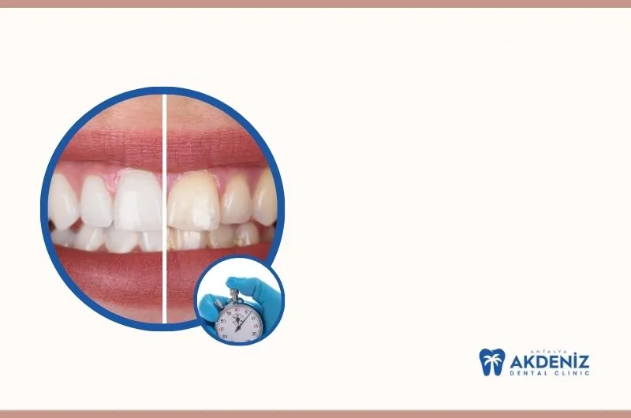

Jak długo trwa wybielanie zębów?Wiele osób marzy o śnieżnobiałym uśmiechu, ale warto wiedzieć, że efekty wybielania zębów nie są trwałe. Średnio profesjonalne wybielanie utrzymuje się od 6 miesięcy do 2 lat; przy dobrej higienie jamy ustnej i diecie okres ten można wydłużyć do 2–3 lat. Bez pielęgnacji dawny kolor może wrócić nawet po kilku miesiącach. Podsumowując, efekt wybielania zależy od osoby i jej nawyków.Wiele osób marzy o śnieżnobiałym uśmiechu, ale trzeba wiedzieć, że efekty wybielania zębów nie są trwałe. Krótka odpowiedź: zęby pozostają białe, dopóki ponownie się nie przebarwią. U osób, które często spożywają barwiące produkty, takie jak kawa, herbata czy czerwone wino, przebarwienia wracają szybciej. Unikając takich nawyków, można dłużej utrzymać efekt wybielania. Efekty profesjonalnego wybielania zębów utrzymują się średnio od 6 miesięcy do 2 lat; przy dobrej higienie jamy ustnej i odpowiedniej diecie okres ten można wydłużyć nawet do 2–3 lat. Bez dbałości o zęby dawny kolor może wrócić już po kilku miesiącach. Podsumowując, trwałość efektu wybielania zależy od osoby i jej nawyków.
Regularna pielęgnacja i unikanie produktów powodujących przebarwienia sprawiają, że promienny uśmiech uzyskany dzięki wybielaniu utrzymuje się dłużej.
Dlaczego zęby się przebarwiają?
Aby zrozumieć trwałość wybielania, trzeba najpierw przyjrzeć się temu, dlaczego zęby zmieniają kolor. Ze względu na porowatą strukturę szkliwa różne czynniki wewnętrzne i zewnętrzne mogą z czasem przyciemniać kolor zębów:
Fizjologiczne starzenie się: Z wiekiem warstwa szkliwa staje się cieńsza, zębina grubieje, a zęby naturalnie żółkną.
Jedzenie i napoje: Barwiące produkty, takie jak kawa, herbata, cola, czerwone wino, potrawy z koncentratem pomidorowym czy borówki, spożywane przez długi czas powodują przebarwienia na powierzchni zębów. Ogólna zasada: wszystko, co może poplamić białą koszulkę, może też przebarwić zęby.
Papierosy i tytoń: Substancje smoliste i nikotyna zawarte w dymie papierosowym mogą wnikać w szkliwo i w ciągu kilku miesięcy tworzyć żółtobrązowe przebarwienia. U osób używających wyrobów tytoniowych zęby szybko się przebarwiają.
Niedostateczna higiena jamy ustnej: Bez regularnego szczotkowania i nitkowania płytka nazębna i kamień gromadzące się na powierzchni nasilają przebarwienia.
Leki (antybiotyki): Antybiotyki, takie jak tetracyklina, stosowane w niemowlęctwie lub w czasie ciąży mogą zostać wbudowane w strukturę rozwijających się zębów i powodować wewnętrzne szare/brązowe przebarwienia. Takie przebarwienia wewnętrzne są głębsze i trudniejsze do usunięcia.
Leczenie kanałowe: Obumarcie miazgi (nerwu zęba) lub brak odżywiania zęba od wewnątrz po leczeniu kanałowym może z czasem spowodować, że ząb stanie się ciemnożółty/szary.
Wypełnienia amalgamatowe: Stare wypełnienia amalgamatowe (srebrne) mogą z czasem nadawać otaczającym tkankom zęba szaroczarne refleksy.
Uraz: Jeśli w wyniku uderzenia w ząb tkanka nerwowa obumrze, ząb może zmienić kolor z powodu wewnętrznego krwawienia i pozostałości tkanek.
Przebarwienia spowodowane powyższymi czynnikami mogą mieć pochodzenie wewnętrzne lub zewnętrzne. Powierzchowne przebarwienia zewnętrzne można usunąć dokładnym oczyszczaniem lub wybielaniem, natomiast wybielanie przebarwień wewnętrznych może być dłuższe i bardziej pracochłonne. Na przykład wewnętrzne przebarwienia tetracyklinowe mogą wymagać wielomiesięcznego leczenia, aby osiągnąć pożądany efekt.
Jak działa wybielanie zębów?
Wybielanie zębów polega na chemicznym rozkładzie barwnych cząsteczek organicznych/nieorganicznych, które wniknęły w szkliwo. Substancją czynną stosowanych w tym procesie żeli wybielających jest nadtlenek wodoru. Niektóre żele wybielające zawierają bezpośrednio nadtlenek wodoru, a inne nadtlenek karbamidu. Nadtlenek karbamidu jest związkiem chemicznie bardziej stabilnym i w kontakcie ze śliną w jamie ustnej powoli przekształca się w nadtlenek wodoru.
Nadtlenek wodoru (HP): Formy o wysokim stężeniu stosuje się zazwyczaj przy wybielaniu gabinetowym. Działa silnie i szybko; rozjaśnia kolor zębów podczas krótkich aplikacji trwających 30–45 minut. Wysokie stężenie HP może jednak powodować przejściową nadwrażliwość zębów.
Nadtlenek karbamidu (CP): Nadtlenek karbamidu w stężeniu 10–15% nakłada się w jamie ustnej na kilka godzin lub na noc i działa stopniowo. Żel zawierający 35% CP odpowiada chemicznie około 12% HP. Innymi słowy, CP zapewnia kontrolowane wybielanie przez dłuższy czas.
Nadtlenek wodoru utlenia barwne cząsteczki w szkliwie, tzw. chromogeny, za pomocą rodników tlenowych, rozrywając w ten sposób ciemne wiązania i rozjaśniając je. Podczas zabiegu struktura szkliwa i zębiny nie zostaje naruszona; usuwane są tylko znajdujące się pomiędzy nimi barwne cząsteczki. Prawidłowo przeprowadzone wybielanie nie powoduje trwałego uszkodzenia szkliwa, ale może dojść do przejściowego odwodnienia (utraty wody) i zmian mineralizacji. Dlatego kredowobiały odcień widoczny na koniec zabiegu gabinetowego może nieco się cofnąć, gdy zęby ponownie się nawilżą. Rzeczywisty efekt wybielania należy ocenić 1–2 tygodnie po zabiegu, gdy zęby odzyskają równowagę wilgotności.
Ile jest rodzajów wybielania zębów?
Metody wybielania zębów można zasadniczo podzielić na 5 rodzajów:
Wybielanie zębów w domu: Wykonuje się je za pomocą nakładek przygotowanych specjalnie przez lekarza i żeli o niskim stężeniu stosowanych w domu.
Wybielanie gabinetowe: To szybkie, jednowizytowe wybielanie w klinice stomatologicznej z użyciem żelu o wysokim stężeniu oraz światła/lasera.
Wybielanie łączone: Metoda, która zapewnia maksymalną biel dzięki połączeniu zabiegów gabinetowych i domowych.
Wybielanie pojedynczego zęba (wybielanie wewnętrzne): To wybielanie od wewnątrz pojedynczych przebarwionych zębów po leczeniu kanałowym.
Wybielanie Zoom: To łączony protokół wybielania stosowany w warunkach klinicznych ze specjalnym systemem niebieskiego światła LED.
Możesz też spotkać się z określeniami takimi jak „wybielanie laserowe” czy „wybielanie biologiczne”, które bywają terminami marketingowymi. Laser lub światło LED to narzędzie służące do aktywacji nadtlenku w żelu gabinetowym i przyspieszenia zabiegu. Z kolei wybielanie biologiczne to określenie wybielania żelami dla zębów wrażliwych, o bardzo niskiej zawartości nadtlenku wodoru i zawierającymi kryształy szkliwa (hydroksyapatyt). Zasadniczo istota wszystkich metod jest taka sama; różnią się one sposobem aplikacji, czasem trwania i stężeniem użytego żelu.
Czy wybielanie zębów jest trwałe?
Efekt uzyskany po wybielaniu nie utrzymuje się na całe życie. To, jak długo Twoje zęby pozostaną białe, zależy od spożywanych produktów, higieny jamy ustnej i nawyków. Zazwyczaj efekt bieli zaczyna słabnąć po 6 miesiącach do 1 roku. U przeciętnej osoby całkowite zniknięcie efektów może potrwać 1–2 lata. Na ten okres wpływają jednak następujące czynniki:
Nawyki żywieniowe: Wybielanie utrzymuje się dłużej u osoby, która unika barwiących potraw i napojów oraz pije wodę i je jasne produkty. Natomiast osoby często spożywające produkty barwiące zęby, takie jak kawa, herbata, wino, cola, curry, sos sojowy, czekolada itp., mogą stracić uzyskany odcień w ciągu kilku miesięcy. Na przykład osoba pijąca kilka filiżanek kawy dziennie szybciej zauważy przebarwienia niż osoba, która jej nie pije.
Palenie: Nawyki tytoniowe, takie jak papierosy czy fajka, to jeden z największych wrogów po wybielaniu. Jeśli zęby osoby niepalącej mogą pozostać białe przez 2 lata, u osoby regularnie palącej ta sama biel może cofnąć się w ciągu 6 miesięcy.
Higiena jamy ustnej: Po wybielaniu trzeba myć zęby co najmniej dwa razy dziennie, regularnie je nitkować i zapobiegać tworzeniu się płytki nazębnej za pomocą płynu do płukania jamy ustnej. U osób, które dobrze dbają o zęby, przebarwienia słabiej się utrzymują, a biel trwa dłużej.
Budowa zębów: Struktura szkliwa jest u każdego inna. Niektóre zęby są z natury bardziej porowate i podatne na przebarwienia. U takich osób trwałość wybielania może być nieco krótsza.
Na co zwrócić uwagę, aby wydłużyć trwałość efektu po wybielaniu?
Pierwsze dni po wybielaniu mają kluczowe znaczenie dla utrwalenia uzyskanego efektu. Zwłaszcza w ciągu pierwszych 48 godzin, a jeśli to możliwe przez pierwsze 1–2 tygodnie, zwróć uwagę na kilka kwestii:
- Unikaj barwiących napojów: W pierwszych dniach w miarę możliwości nie pij herbaty, kawy, czerwonego wina, coli ani soków owocowych (zwłaszcza wiśniowego, z granatu, pomarańczowego). Napoje te mogą szybko wnikać w szkliwo o otwartych porach i powodować przebarwienia. Wybieraj wodę, mleko i jasne herbaty ziołowe.
- Unikaj kwaśnych potraw i napojów: Kwaśne produkty, takie jak napoje gazowane, energetyki, owoce cytrusowe czy ocet, mogą lekko nadżerać szkliwo. Ponieważ po wybielaniu powierzchnia szkliwa jest przejściowo wrażliwa, kwasy zarówno nasilają nadwrażliwość, jak i sprzyjają przebarwieniom.
- Unikaj wyrobów tytoniowych: Nie używaj papierosów, fajki ani fajki wodnej. Nikotyna i substancje smoliste w połączeniu ze śliną mogą przylegać do powierzchni zębów i natychmiast pozostawiać żółtawą warstwę. Najlepiej trzymać się od nich z daleka, zwłaszcza przez pierwszy tydzień.
- Unikaj skrajnego zimna i ciepła: W pierwszych dniach bardzo zimne napoje z lodem czy bardzo gorąca herbata i zupy mogą wywoływać ból wrażliwych zębów. Ciepłe potrawy i napoje w temperaturze pokojowej będą dla Ciebie komfortowe.
- Uważaj na kolorowe potrawy: Przez co najmniej 3–4 dni staraj się unikać intensywnie zabarwionych potraw, takich jak curry, koncentrat pomidorowy, sos sojowy, szpinak, buraki czy marchew. W posiłkach wybieraj więcej produktów w białych/żółtych odcieniach (ziemniaki, makaron, białe mięso, banany itp.).
- Nie zaniedbuj higieny jamy ustnej: Myj zęby delikatnie miękką szczoteczką co najmniej 2 razy dziennie. Ponieważ pierwszego dnia po wybielaniu może występować pewna nadwrażliwość, warto myć zęby bez nacisku, używając pasty z fluorem do zębów wrażliwych. Zapobiegaj gromadzeniu się płytki nazębnej, używając nici dentystycznej.
- Stosuj się do zaleceń stomatologa: Jeśli stomatolog dał Ci żel do stosowania po zabiegu lub zalecił specjalny płyn do płukania, nie zaniedbuj tego. Koniecznie przyjdź na wizytę kontrolną.
Po tym pierwszym okresie należy w miarę możliwości unikać nawyków, które mogą przebarwiać zęby, lub przynajmniej je ograniczyć. Utrzymanie jasnej diety przez całe życie jest oczywiście trudne, ale aby wydłużyć efekt wybielania, kluczowe jest zachowanie ostrożności przez pierwsze 1–2 tygodnie. W kolejnym okresie dzięki umiarkowanemu spożyciu i dobrej higienie jamy ustnej możesz długo cieszyć się białymi zębami. Ponadto w codziennej pielęgnacji mogą pomóc wybielające pasty chroniące kolor (bez cząsteczek ściernych).
Podsumowanie: utrzymanie białego uśmiechu jest w Twoich rękach
Wybielanie zębów to jeden z najpopularniejszych zabiegów estetycznych we współczesnej stomatologii, który wykonany prawidłowo daje bezpieczne i skuteczne efekty. Pamiętaj jednak, że wybielanie nie jest trwałe i podobnie jak w przypadku innych zabiegów pielęgnacyjnych jego efekt może z czasem słabnąć. To, jak długo utrzymasz efekty, zależy od Twojego stylu życia po wybielaniu.
Podsumowując:
- Wybielanie usuwa istniejące przebarwienia w strukturze zęba, ale nie uodparnia zębów na przyszłe przebarwienia. Innymi słowy, efekt nie jest trwały, lecz jest estetyką okresową.
- U przeciętnej osoby efekt profesjonalnego wybielania utrzymuje się od kilku miesięcy do kilku lat. Złe nawyki go skracają, dobra pielęgnacja wydłuża.
- Gdy pojawią się przebarwienia, zabieg można powtórzyć – wykonywany w odpowiednich odstępach nie szkodzi zębom. Pod tym względem wybielanie jest zabiegiem kosmetycznym, który w razie potrzeby można odnowić.
Jeśli Twoje zęby wrócą do naturalnego koloru, nie zniechęcaj się i skontaktuj się ze stomatologiem. Być może jedna sesja przypominająca pozwoli Ci odzyskać blask z pierwszego dnia. Pamiętaj, że Twój uśmiech lśni tak bardzo, jak o niego dbasz – dzięki regularnej pielęgnacji i profesjonalnemu wsparciu możesz przez wiele lat cieszyć się śnieżnobiałymi zębami.